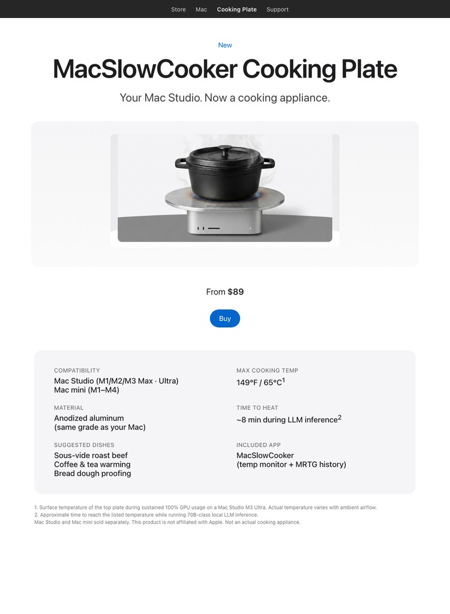

← hakaru Apps
CONCEPT / PARODY
MacSlowCooker Cooking Plate
Your Mac Studio. Now a cooking appliance.

This is a joke. The MacSlowCooker Cooking Plate is not a real product, accessory,
or trademark. The page above is a parody of an Apple-style product launch.
Apple is not affiliated with or aware of this concept.
Where the joke comes from
While developing MacSlowCooker
— a real macOS app that visualizes GPU usage on the Dock as a cooking pot —
running local LLM inference on a Mac Studio M3 Ultra heated up the chassis
enough that the joke "could you actually cook on top of this?" kept coming up.
So this concept page exists. It frames the heat output of a hard-working Mac
as if it were a kitchen feature. The numbers are real, the product is not.
The real numbers
- Mac Studio M3 Ultra reaches roughly 65 °C / 149 °F on the top plate
during sustained 100% GPU usage.
- Time to reach that temperature during 70B-class local LLM inference: ~8 min.
- Apple's thermal design caps the top plate well below normal cooking temperatures.
Sous-vide range, not stir-fry.
- You can monitor all of this live with the actual MacSlowCooker app
(Dock icon, popup window, MRTG-style 4-panel history viewer).
Don't actually do this
Resting hot cookware, liquids, or anything heat-sensitive on top of an active
computer is a bad idea. Mac Studio's top plate is aluminum but the airflow path
is critical to keeping the SoC under thermal limits. Blocking it shortens the
machine's life and may void warranty.
Read more